Assessing the distribution of anthropometric variables, indices, and indicators
In this section we will examine the distribution of anthropometric variables (e.g. weight, height, and MUAC), anthropometric indices (e.g. WHZ, HAZ, and WHZ), and anthropometric indicators (e.g. wasted, stunted, and underweight).
Topics such as the distribution of age, age by sex, age-heaping, and digit preference are covered in other sections of this toolkit.
We will retrieve a survey dataset:
The file dist.ex01.csv is a comma-separated-value (CSV) file containing anthropometric data from a SMART survey in Kabul, Afghanistan.
Numerical summaries
The summary() function in R provides a six-figure
summary (i.e. minimum, first quartile, median, means, third quartile,
and maximum) of a numeric variable. For example:
summary(svy$weight)returns:
#> Min. 1st Qu. Median Mean 3rd Qu. Max.
#> 4.90 9.00 11.00 11.13 13.10 20.70The six-figure summary does not report the standard deviation.
The sd() function in R calculates the standard
deviation. For example:
sd(svy$weight)returns:
#> [1] 2.802065The sd() function may return NA. This
will happen if there are missing values in the specified variable.
If this happens you can instruct the function to ignore missing values:
sd(svy$weight, na.rm = TRUE)returns the same value:
#> [1] 2.802065Using the na.rm parameter in this way (i.e. specifying
na.rm = TRUE) works with many descriptive functions in R
(see table below).
| Function* | Returns |
|---|---|
| mean() | Mean of the specified variables |
| sd() | Standard deviation of the specified variable |
| var() | Variance of the specified variable |
| median() | Median of the specified variable |
| min() | Minimum of the specified variable |
| max() | Maximum of the specified variable |
| range() | Range of the specified variable |
| IQR() | Interquartile range of the specified variable |
| quantile() | Quantiles of the specified variable |
| summary() | Six-figure summary of the specified variable |
| mad() | Adjusted median absolute deviation |
| length() | Number of observations in the specified variable |
| nrow() | Number of rows in a data.frame (dataset) |
|
* If a function returns NA this may be because the variable
contains missing values. Use na.rm = TRUE to instruct the function to ignore missing values. |
Graphical and numerical summaries
Numerical summaries are useful for checking that data are within an expected range.
Graphical methods are often more informative than numerical summaries.
A key graphical method for examining the distribution of a variable is the histogram. For example:
hist(svy$weight)displays a histogram of the weight variable in the example dataset (see figure below).
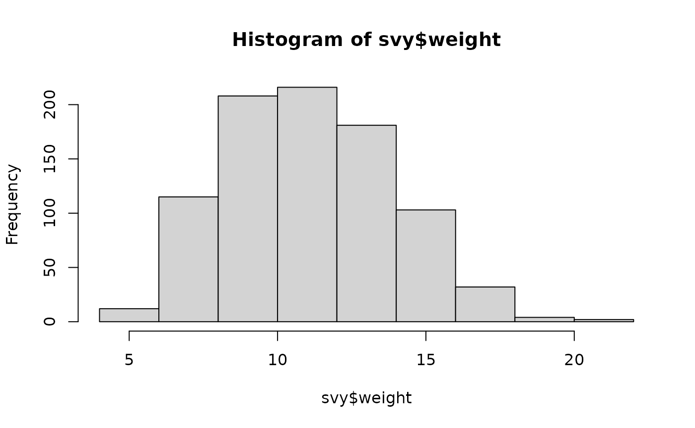
We need to be careful when examining the distribution of measurements, as they may vary by sex. For example:
hist(svy$height)will display the heights of both males and females. That is, it will display two separate distributions as if they were a single distribution.
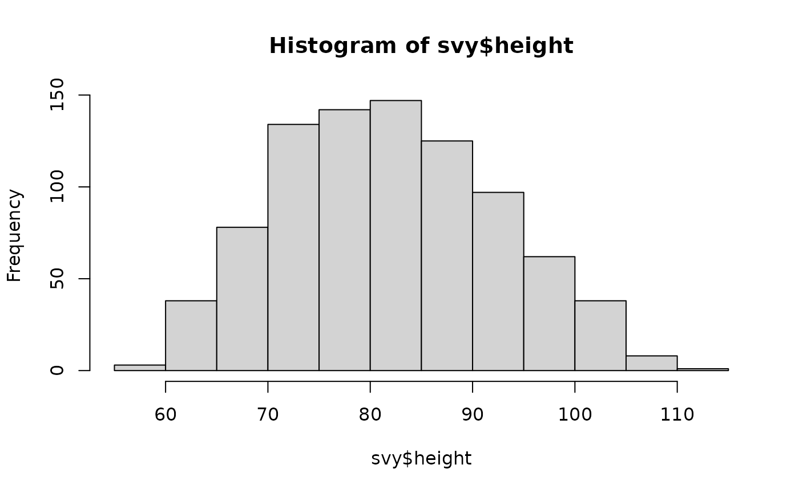
In this case it is sensible to look at the data for males and the data for females using separate histograms:
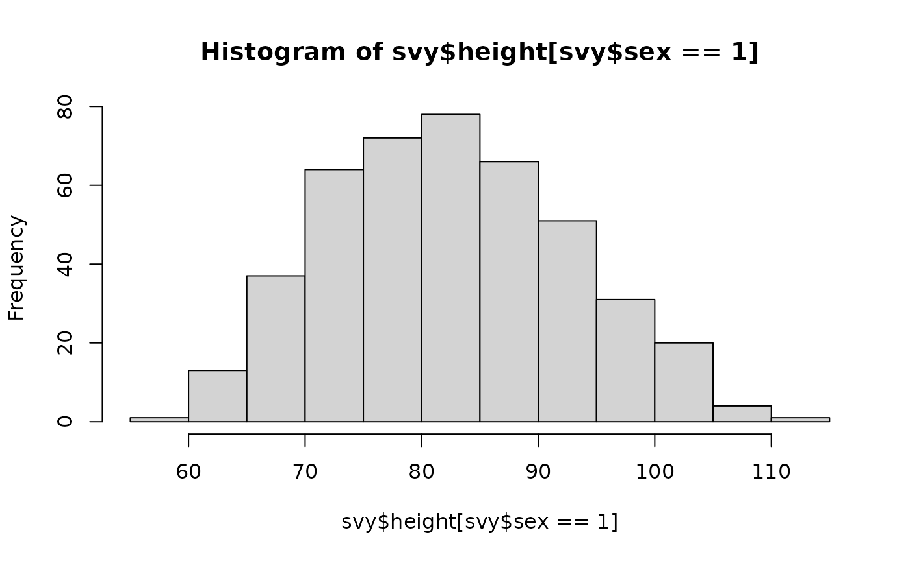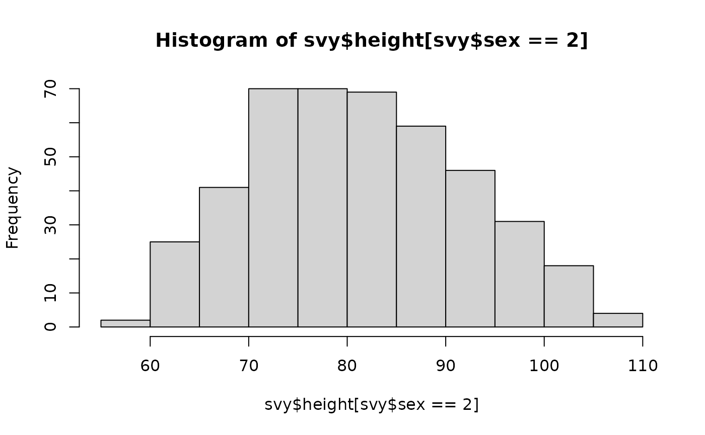
or using a box-plot:
boxplot(svy$height ~ svy$sex, names = c("M", "F"),
xlab = "Sex", ylab = "Height (cm)", main = "Height by sex")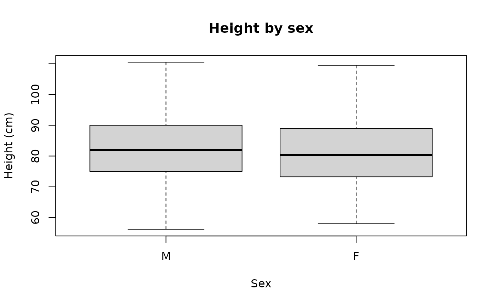
Numerical summaries can also be used:
by(svy$height, svy$sex, summary)This returns:
#> svy$sex: 1
#> Min. 1st Qu. Median Mean 3rd Qu. Max.
#> 56.20 75.00 81.95 82.49 90.00 110.50
#> ------------------------------------------------------------
#> svy$sex: 2
#> Min. 1st Qu. Median Mean 3rd Qu. Max.
#> 58.00 73.25 80.30 81.30 88.95 109.50Normal distributions
With anthropometric variables and indices we usually expect a symmetrical (or nearly symmetrical) “bell-shaped” distribution. The variables and indices of interest are usually:
These plots are shown below.
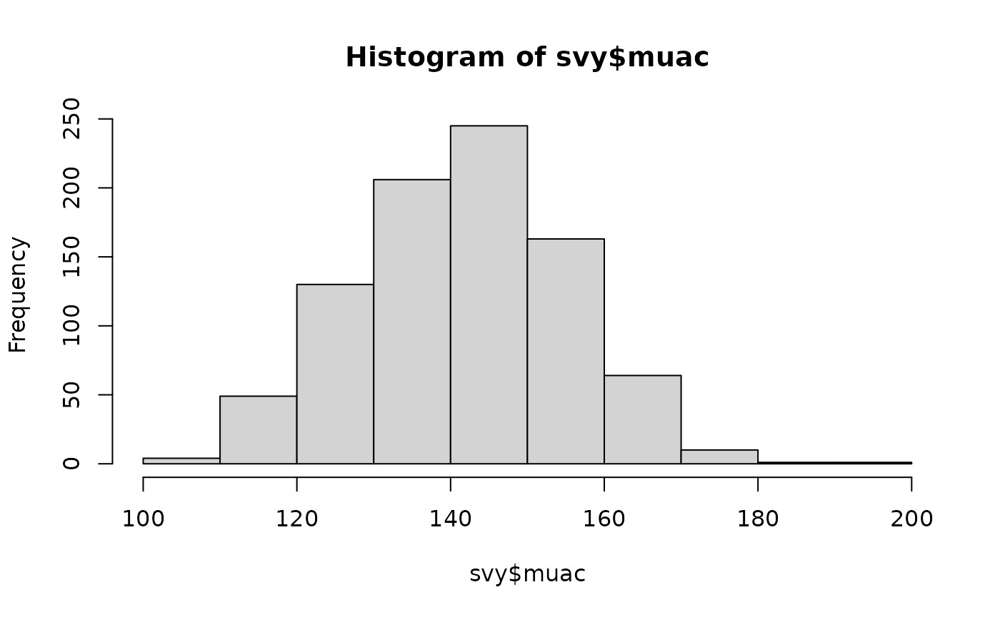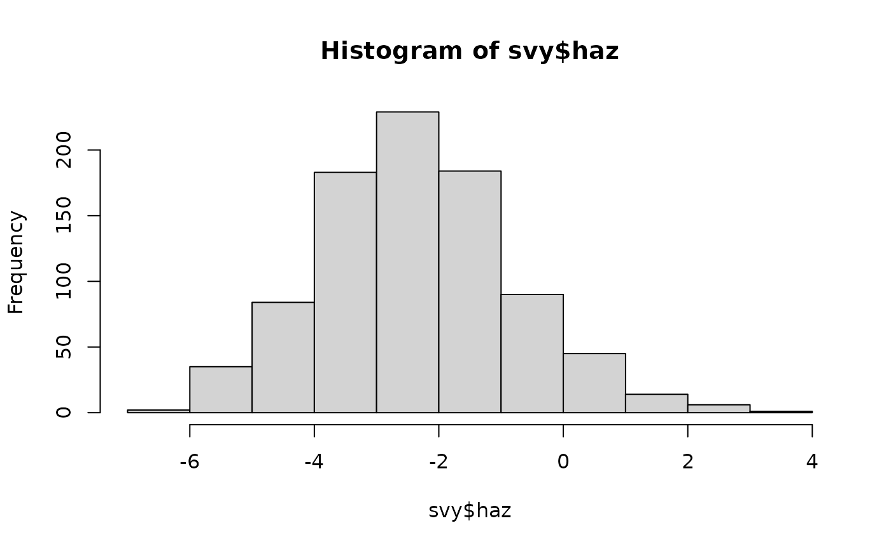

Histograms showing the distribution of anthropometric indices in the example dataset
The number and size of the “intervals” (breaks) used
when plotting a histogram is calculated to produce a useful plot. The
intervals used are based on the range of the data.
You can specify a different set of breaks for the
hist() function to use. For example:
hist(svy$haz, breaks = "scott")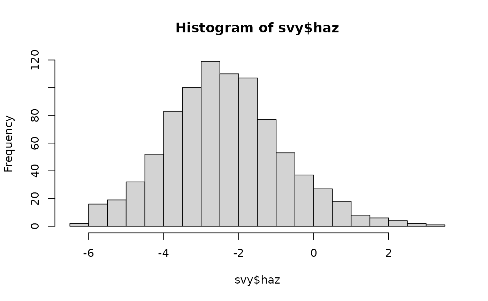
calculates intervals using the standard deviation and the sample size. This:
hist(svy$haz, breaks = "FD")
calculates intervals using the inter-quartile range. This:
hist(svy$haz, breaks = 40)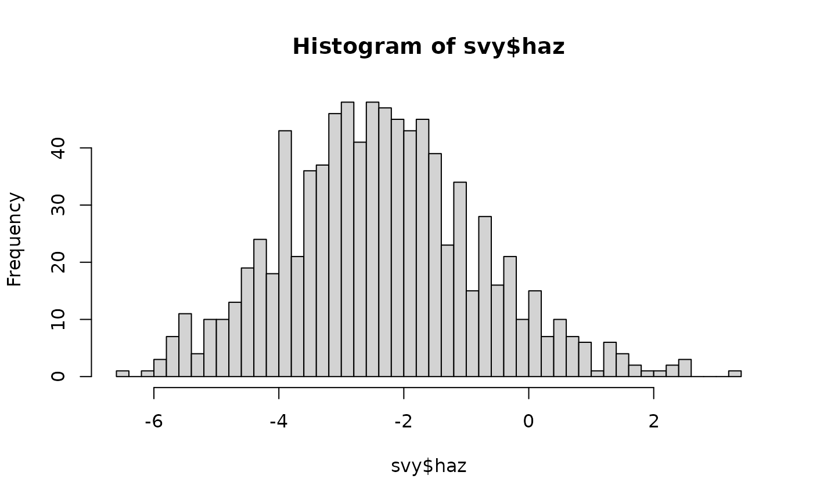
will use about 40 intervals. This:
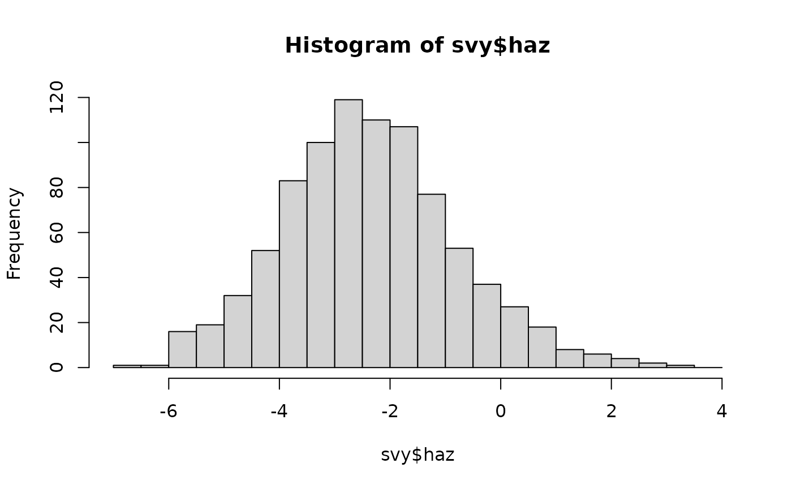
uses intervals that are 0.5 z-scores wide over the full range of haz.
All of these plots show nearly symmetrical “bell-shaped” distributions.
The ideal symmetrical “bell-shaped” distribution is the normal distribution.
There are a number of ways of assessing whether a variable is normally distributed.
The first way of assessing whether a variable is normally distributed is a simple “by-eye” assessment as we have already done using histograms.
The NiPN data quality toolkit provides an R language function called
histNormal() that can help with “by-eye” assessments by
superimposing a normal curve on a histogram of the variable of
interest:
histNormal(svy$muac)
histNormal(svy$haz)
histNormal(svy$waz)
histNormal(svy$whz)These plots are shown below. All variables appear to be approximately normally distributed.
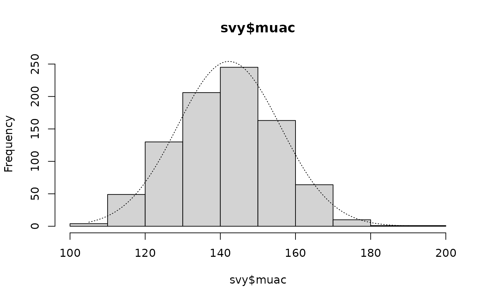
Histograms of anthropometric indices with normal curves superimposed
Changing the breaks parameter may make a histogram
easier to “read”. For example:
histNormal(svy$haz, breaks = 15)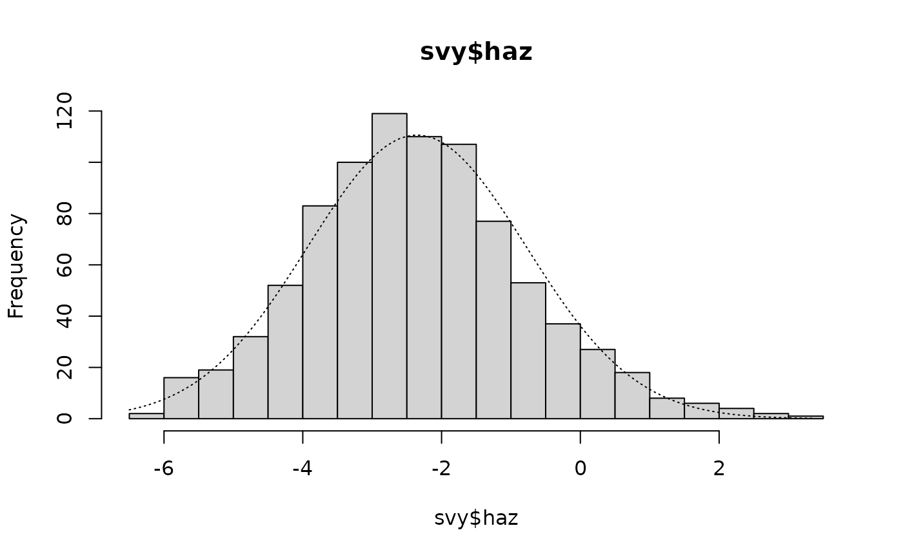
Another graphical method for assessing whether a variable is normally distributed is the normal quantile-quantile plot. These are easy to produce using R.
The NiPN data quality toolkit provided a helper function called
qqNormalPlot() that produces a slightly enhanced normal
quantile-quantile plot:
qqNormalPlot(svy$whz)This plot is shown below (with annotations). In this example the tails of the distribution contain more cases than would be expected in a perfectly normally distributed variable.
Annotated normal quantile-quantile plot of the whz variable in the example dataset
We should examine all of the relevant variables:
qqNormalPlot(svy$muac)
qqNormalPlot(svy$haz)
qqNormalPlot(svy$waz)
qqNormalPlot(svy$whz)These plots are shown below. There is evidence of small deviations from normality in muac, haz, and whz.

Normal quantile-quantile plots of anthropometric indices in the example dataset
A final way of assessing normality is to use a formal statistical significance test. The preferred test is the Shapiro-Wilk test of normality:
shapiro.test(svy$muac)
#>
#> Shapiro-Wilk normality test
#>
#> data: svy$muac
#> W = 0.99496, p-value = 0.005495
shapiro.test(svy$haz)
#>
#> Shapiro-Wilk normality test
#>
#> data: svy$haz
#> W = 0.99348, p-value = 0.0007455
shapiro.test(svy$waz)
#>
#> Shapiro-Wilk normality test
#>
#> data: svy$waz
#> W = 0.99827, p-value = 0.5358
shapiro.test(svy$whz)
#>
#> Shapiro-Wilk normality test
#>
#> data: svy$whz
#> W = 0.99078, p-value = 2.777e-05These tests indicate that muac, haz, and whz are significantly non-normal. Examination of the histograms and the normal quantile-quantile plots show that the deviation from normality in these indices are not particular marked. All indices have symmetrical, or nearly symmetrical, “bell-shaped” distributions.
We need to be careful when using significance tests such as the Shapiro-Wilk test of normality because the results can be strongly influenced by the sample size.
Small sample sizes can lead to tests missing large effects and large sample sizes can lead to tests identifying small effects as highly significant.
The analysis above found some highly significant but small deviations from normality that would probably not have been detected by a significance test if a smaller sample size had been used.
We can simulate a considerably smaller sample size by taking, for example, every fourth muac value:
length(svy$muac)
#> [1] 873
oneQuarter <- svy$muac[seq(from = 1, to = length(svy$muac), by = 4)]
length(oneQuarter)
#> [1] 219Inspecting this smaller sample graphically:
histNormal(oneQuarter)
qqNormalPlot(oneQuarter)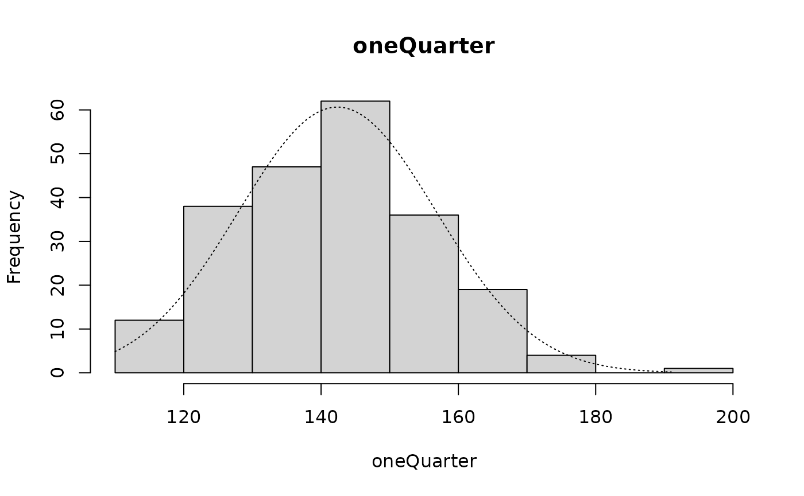
yields results similar to those found when the complete sample was used, but the formal test:
shapiro.test(oneQuarter)
#>
#> Shapiro-Wilk normality test
#>
#> data: oneQuarter
#> W = 0.98836, p-value = 0.0724is no longer significant at p < 0.05.
If a distribution appears to be normal (i.e. has a symmetrical, or nearly symmetrical, “bell-shaped” distribution) then it is usually safe to assume normality and to use statistical procedures that assume normality. Formal tests for normality can be misleading when sample sizes of more than a few hundred cases are used. Graphical methods are not very useful when sample sizes are small. Formal test are not very useful when sample sizes are large. The sample sizes of most anthropometry surveys will be large enough to cause formal tests for normality to identify small deviations from normality as highly significant.
Skew and kurtosis
Skew is a measure of the asymmetry of a distribution about its mean. Skew can be zero, positive, or negative. Zero skew is found when the distribution is perfectly symmetrical. Positive skew is found when there is a long right tail to the distribution and the mass of the distribution is concentrated to the left. Negative skew is found when there is a long left tail to the distribution and the mass of the distribution is concentrated to the right. We can usually see skew in histograms. We can also calculate a skewness statistic and test if this is significantly different from zero.
Kurtosis is a measure of how much a distribution is concentrated about the mean. Kurtosis can be zero, positive, or negative. Zero kurtosis is found when a variable is normally distributed. Positive kurtosis is found when the mass of the distribution is concentrated about the mean and there are very few values far from the mean. Negative kurtosis is found when the mass of the distribution is concentrated in the tails of the distribution. We can usually see kurtosis in histograms. We can also calculate a kurtosis statistic and test if this is significantly different from zero.
The NiPN data quality toolkit provides an R language function called
skewKurt() that calculates skewness and kurtosis statistics
and tests whether they differ significantly from zero. Here we apply the
skewKurt() function to the muac variable in the example
dataset:
skewKurt(svy$muac)This returns:
#>
#> Skewness and kurtosis
#>
#> Skewness = +0.0525 SE = 0.0828 z = 0.6348 p = 0.5256
#> Kurtosis = -0.2412 SE = 0.1653 z = 1.4586 p = 0.1447There is positive skew and negative kurtosis. Neither is significantly different from zero.
Applying the skewKurt() function to the
haz variable in the example dataset:
skewKurt(svy$haz)returns:
#>
#> Skewness and kurtosis
#>
#> Skewness = +0.3074 SE = 0.0828 z = 3.7149 p = 0.0002
#> Kurtosis = +0.2074 SE = 0.1653 z = 1.2545 p = 0.2097There is a positive skew and a positive kurtosis. The skew is significantly different from zero. The skew can be seen in the histogram:
histNormal(svy$haz, breaks = "scott")Applying the skewKurt() function to the
waz variable in the example dataset:
skewKurt(svy$waz)returns:
#>
#> Skewness and kurtosis
#>
#> Skewness = -0.0128 SE = 0.0828 z = 0.1541 p = 0.8775
#> Kurtosis = +0.1805 SE = 0.1653 z = 1.0919 p = 0.2749There is negative skew and positive kurtosis. Neither is significantly different from zero.
Applying the skewKurt() function to the
whz variable in the example dataset:
skewKurt(svy$whz)returns:
#>
#> Skewness and kurtosis
#>
#> Skewness = +0.0823 SE = 0.0828 z = 0.9946 p = 0.3199
#> Kurtosis = +0.7528 SE = 0.1653 z = 4.5530 p = 0.0000There is a positive skew and a positive kurtosis. The kurtosis is significantly different from zero. The kurtosis can be seen on the histogram:
histNormal(svy$whz, breaks = "scott")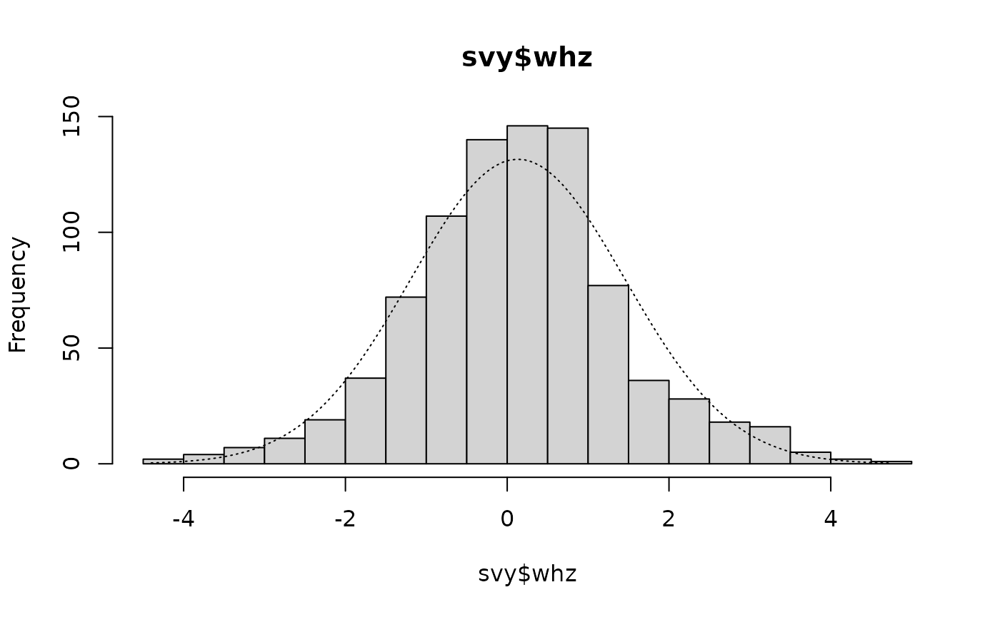
as the tall central columns that exceed the expected values shown by the overlaid normal distribution.
Skew and kurtosis are both used in SMART plausibility checks. Table below shows how skew and kurtosis statistics are applied by SMART.
| Absolute value* of skewness / kurtosis | SMART Interpretation |
|---|---|
| < 0.2 | Excellent |
| ≥ 0.2 and < 0.4 | Good |
| ≥ 0.4 and < 0.6 | Acceptable |
| ≥ 0.6 | Problematic |
|
* This is the value of a number ignoring its negative or
positive sign. The absolute value of -0.2412 is 0.2412. The absolute value of +0.2412 is also 0.2412. |
The whz variable in the example dataset is considered “problematic” according to this scheme because kurtosis is above 0.6.
Care should be exercised when using statistical significance tests to classify data as “problematic”. The use of thresholds and ranges for skew and kurtosis statistics is usually a better approach than relying on tests of statistical significance. Significance tests can be strongly affected by sample size. Small sample sizes can lead to tests missing large effects and large sample sizes can lead to tests identifying small effects as highly significant. If a distribution appears to be normal (i.e. has a symmetrical, or nearly symmetrical, “bell-shaped” distribution) then it is usually safe to assume normality and to use statistical procedures that assume normality.
It is important to remember that the normal distribution is a mathematical abstraction. There is nothing compelling the real world to conform to the normal distribution. The normal distribution has become reified:
Everyone is sure of this [the normal distribution] … experimentalists believe that it is a mathematical theorem, and the mathematicians that it is an experimentally determined fact.
The data we see may be representative of reality even when it fails tests for normality.
Tests for normality are useful when selecting statistical methods that rely on normality. They are less useful for determining data quality. If data follows a symmetrical, or nearly symmetrical, “bell-shaped” distribution then it will usually safe to use.
Deviation from normality
Some anthropometric survey methods (e.g. SMART) use deviations from perfect normality as an indicator of poor data quality. This is not a sensible approach because deviations from normality are not necessarily due to poor quality data; they can be due to sampling a mixed population. This is easy to demonstrate with some simulated data.
We will assume that we have a population consisting of two groups:
Group 1 : 75% of the population, mean = -0.48, sd = 0.87
Group 2 : 25% of the population, mean = -1.04, sd = 1.10
and that we take a sample size = 1000 from the whole population. We can simulate this:
set.seed(0)
g1 <- rnorm(n = 750, mean = -0.48, sd = 0.87)
g2 <- rnorm(n = 250, mean = -1.04, sd = 1.11)
g1g2 <- c(g1, g2)The distributions in the two subgroups (g1 and g2) are both normally distributed:
histNormal(g1)
qqNormalPlot(g1)
shapiro.test(g1)
skewKurt(g1)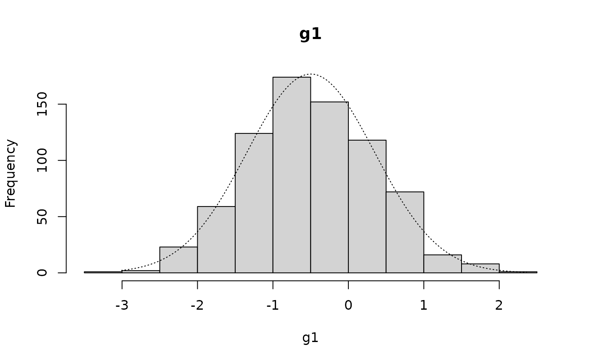
#>
#> Shapiro-Wilk normality test
#>
#> data: g1
#> W = 0.99725, p-value = 0.2411
#>
#> Skewness and kurtosis
#>
#> Skewness = +0.1149 SE = 0.0893 z = 1.2867 p = 0.1982
#> Kurtosis = -0.1869 SE = 0.1783 z = 1.0483 p = 0.2945
histNormal(g2)
qqNormalPlot(g2)
shapiro.test(g2)
skewKurt(g2)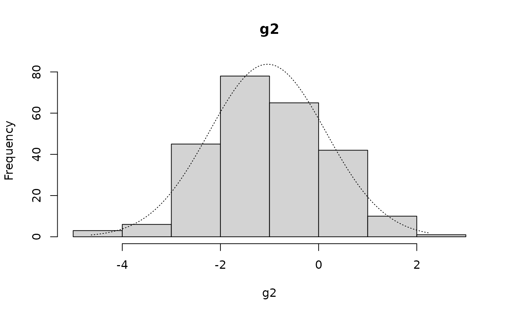
#>
#> Shapiro-Wilk normality test
#>
#> data: g2
#> W = 0.9947, p-value = 0.5363
#>
#> Skewness and kurtosis
#>
#> Skewness = +0.0317 SE = 0.1540 z = 0.2058 p = 0.8369
#> Kurtosis = -0.1282 SE = 0.3068 z = 0.4178 p = 0.6761but the distribution in the entire sample (g1g2) is not normal:
histNormal(g1g2)
qqNormalPlot(g1g2)
shapiro.test(g1g2)
skewKurt(g1g2)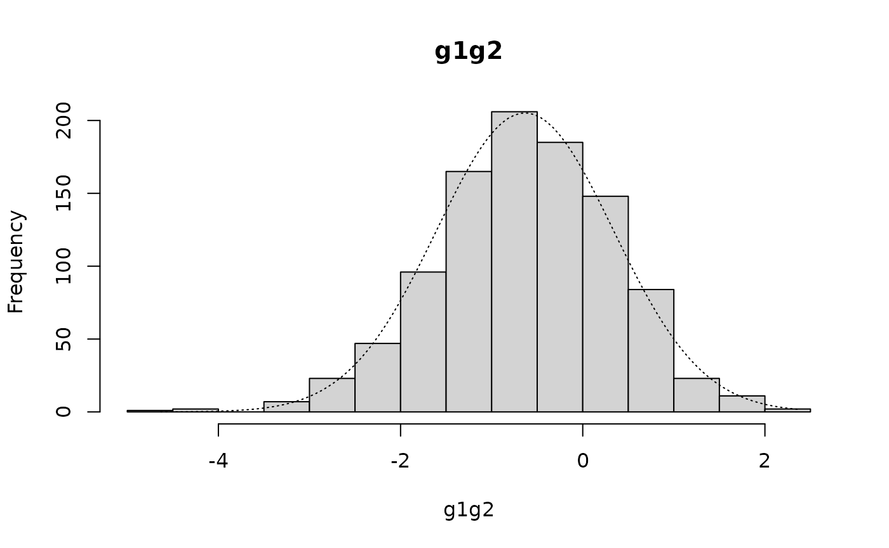
The Shapiro-Wilk test of normality returns:
#>
#> Shapiro-Wilk normality test
#>
#> data: g1g2
#> W = 0.99671, p-value = 0.03514There is statistically significant negative skew:
#>
#> Skewness and kurtosis
#>
#> Skewness = -0.1767 SE = 0.0773 z = 2.2851 p = 0.0223
#> Kurtosis = +0.2894 SE = 0.1545 z = 1.8728 p = 0.0611There is, however, nothing wrong with the sample or with the data
The distribution in the entire sample (g1g2) is called a “mixture of Gaussians” (the term “Gaussian” refers to the normal distribution in this context).
We can see this mixture of Gaussians with:
hist(g1, col=rgb(0.2, 0.2, 0.2, 0.5),
breaks = seq(-5, 3, 0.5), xlab = "", main = "")
hist(g2, col=rgb(0.8, 0.8, 0.8, 0.5), breaks = seq(-5, 3, 0.5), add = TRUE)
title(main = "Histogram of g1 and g2", xlab = "z-score")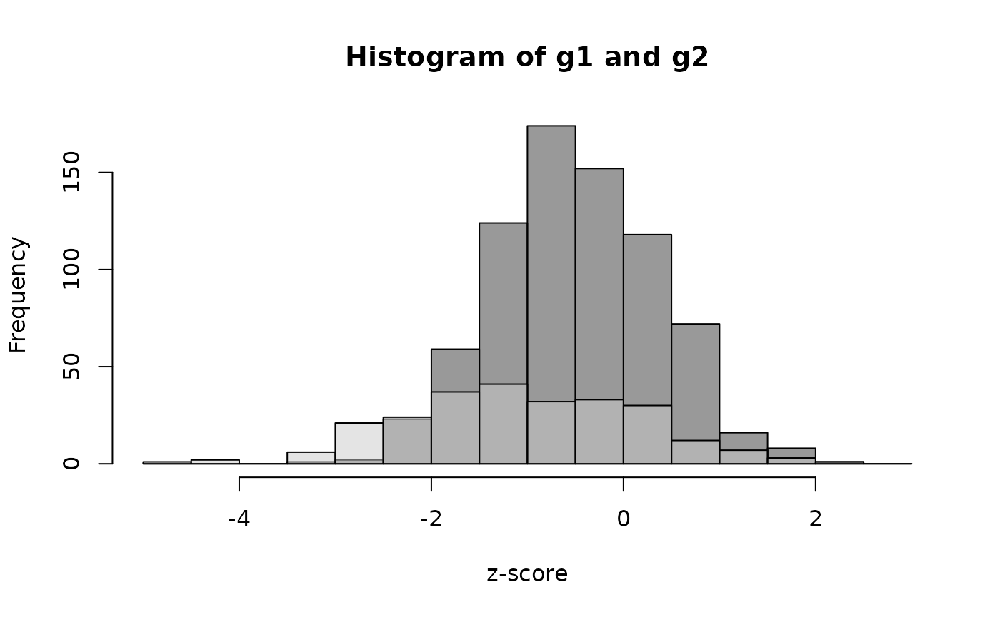
In this case the mixture was already known. There are a number of methods for revealing the underlying mixture when the components of the mixture are unknown. These techniques are not covered in this toolkit. We will, however, continue with an example in which the components of the mixture are suspected.
We expect to see small deviations from normality in most survey datasets. This will often be the case when a survey samples subjects over a wide area covering, for example, several agro-ecological zones, socio-economic groups, or ethnic groups. This will almost always be the case, particularly with large surveys such as DHS, MICS, and national SMART surveys.
Another reason for non-normality is that one (or more) of the survey teams has a systematic bias in making a measurement. Identifying the “offending” survey team by examining and testing for normality separately in all combinations of data from \(n ~ – ~ 1\) survey teams can be attempted. If (e.g.) there were three teams then we would need to separately test data from:
Team 1 and Team 2 (Team 3 excluded)
Team 1 and Team 3 (Team 2 excluded)
Team 2 and Team 3 (Team 1 excluded)
to see if the deviation from normality disappears when a particular team’s data are excluded. There is, however, a problem with this type of analysis. In cluster-sampled surveys, teams often sample adjacent primary sampling units (clusters). When this occurs the “exclude one team” analysis cannot distinguish between differences due to spatial heterogeneity (i.e. patchiness) and differences due to a team having a systematic measurement bias.
The standard deviation and alternatives
The standard deviation is sometimes considered to be useful measure of data quality when applied to z-scores.
We can use the sd() function to find the standard deviation. For example:
sd(svy$whz)returns:
#> [1] 1.3234691.323469
This may produce misleading values if applied to raw data. This procedure should only be applied to cleaned data from which erroneous data and flagged records have been censored.
SMART guidelines state that the acceptable range for the standard deviation of the weight-for-height z-scores (whz) is 0.8 to 1.2 when flagging criteria have been applied and flagged records have been censored. Standard deviations outside this range are considered to indicate poor survey quality. Note that SMART does not define threshold for anthropometric indices other than weight-for-height z-scores. It is important to note that a standard deviation above 1.2 may be due to sampling from a mixed population rather than due to poor data quality.
The flag column in the example dataset contains a flagging code in which the codes 2, 3, 6, or 7 indicate potential problems with weight and / or height. We should calculate the standard deviation of the whz variable using only the data in which records with these flagging codes are censored and there is no oedema recorded:
The ! character specifies a logical “not”. The standard
deviation is, therefore, calculated using records in which the
flag variable does not contain
2, 3, 6, or
7 or oedema is not recorded as being
present.
The standard deviation for whz when flagged records and oedema cases are censored is:
#> [1] 1.141944This is within the SMART acceptable range of 0.8 to 1.2.
The problem with using the standard deviation with raw data is that it is a non-robust statistic. This means that it can be strongly influenced by outliers. For example:
returns:
#> [1] 1.097533Adding a single outlier (e.g. data entered as 7.84 rather than as 4.78):
returns:
#> [1] 1.496963In this example a single outlier has strongly influenced the standard deviation.
There are a number of robust estimators for the standard deviation. R
provides the mad() function to calculate an adjusted
median absolute deviation (MAD).
The median absolute deviation (MAD) is defined as the median of the absolute deviations from the median. It is the median of the absolute values of the differences between the individual data points and the median of the data:
\[ MAD ~ = ~ ( | x_i ~ - ~ median(x) | ) \]
The calculated MAD is adjusted to make it consistent with the standard deviation:
\[ \hat{\sigma} ~ = ~ k ~ \times ~ MAD \]
where k is a constant scaling factor, which depends upon the distribution. For the normal distribution:
\[ k ~ = ~ 1.4826 \]
The mad() function in R function returns the adjusted
MAD:
\[ \hat{\sigma} ~ = ~ 1.4826 ~ \times ~ MAD \]
This is a robust estimate of the standard deviation.
This estimator is preferred when a sample is taken from a mixed population (this is almost always the case) and when the distribution has “fat” or “heavy” tails, as is the case with the whz variable in the example dataset.
Using the mad() function with the raw WHZ data:
mad(svy$whz)This returns:
#> [1] 1.156428We would usually want to calculate the adjusted MAD of the whz variable using only the data in which records with flagging codes relevant to whz and cases of oedema are censored:
This returns:
#> [1] 1.097124The use of the standard deviation and robust equivalents such as the adjusted MAD with simple thresholds is problematic. Data that is a mixture of Gaussians distributions will tend to have large standard deviations even when there is no systematic error and nothing is wrong with the sample. Checks on the standard deviation in large surveys should, therefore, be performed on the smallest spatial strata above the PSU or cluster level. This reduces but does not eliminate the problem of sampling from mixed populations.
We will retrieve a dataset and examine within-strata MADs:
svy <- read.table("flag.ex03.csv", header = TRUE, sep = ",")
head(svy)#> psu region state age sex weight height haz waz whz
#> 1 1 SE Abia 12 2 7.4 72.1 -0.74 -1.58 -1.69
#> 2 1 SE Abia 33 1 13.3 94.2 0.04 -0.33 -0.52
#> 3 1 SE Abia 44 2 14.1 98.6 -0.41 -0.63 -0.57
#> 4 1 SE Abia 40 2 15.8 99.3 0.39 0.59 0.55
#> 5 1 SE Abia 23 2 10.1 83.9 -0.51 -0.90 -0.92
#> 6 1 SE Abia 24 1 13.9 88.7 0.52 1.18 1.22The file flag.ex03.csv is a comma-separated-value (CSV) file containing anthropometric data from a national SMART survey in Nigeria.
The data stored in the file flag.ex03.csv were collected using methods similar to MICS and DHS surveys. The only difference is that the survey concentrated on anthropometric data in children aged between 6 and 59 months. In this exercise we will concentrate on WHZ.
Data are stratified by region and by state within region. We will create a new variable that combines region and state:
svy$regionState <- paste(svy$region, svy$state, sep = ":")
head(svy)
#> psu region state age sex weight height haz waz whz regionState
#> 1 1 SE Abia 12 2 7.4 72.1 -0.74 -1.58 -1.69 SE:Abia
#> 2 1 SE Abia 33 1 13.3 94.2 0.04 -0.33 -0.52 SE:Abia
#> 3 1 SE Abia 44 2 14.1 98.6 -0.41 -0.63 -0.57 SE:Abia
#> 4 1 SE Abia 40 2 15.8 99.3 0.39 0.59 0.55 SE:Abia
#> 5 1 SE Abia 23 2 10.1 83.9 -0.51 -0.90 -0.92 SE:Abia
#> 6 1 SE Abia 24 1 13.9 88.7 0.52 1.18 1.22 SE:Abia
table(svy$regionState)
#>
#> NC:Benue NC:FCT (Abuja) NC:Kogi NC:Kwara NC:Nasarawa
#> 386 363 326 392 430
#> NC:Niger NC:Plateau NE:Adamawa NE:Bauchi NE:Borno
#> 589 503 410 804 558
#> NE:Gombe NE:Taraba NE:Yobe NW:Jigawa NW:Kaduna
#> 643 421 689 711 536
#> NW:Kano NW:Katsina NW:Kebbi NW:Sokoto NW:Zamfara
#> 671 657 728 646 668
#> SE:Abia SE:Anambra SE:Ebonyi SE:Enugu SE:Imo
#> 334 390 455 418 371
#> SS:Akwa-Ibom SS:Bayelsa SS:Cross River SS:Delta SS:Edo
#> 331 330 376 346 480
#> SS:Rivers SW:Ekiti SW:Lagos SW:Ogun SW:Ondo
#> 315 376 640 566 426
#> SW:Osun SW:Oyo
#> 435 610We can examine the adjusted MAD for whz for each combination of region and state in the survey dataset using:
by(svy$whz, svy$regionState, mad, na.rm = TRUE)
#> svy$regionState: NC:Benue
#> [1] 0.941451
#> ------------------------------------------------------------
#> svy$regionState: NC:FCT (Abuja)
#> [1] 0.96369
#> ------------------------------------------------------------
#> svy$regionState: NC:Kogi
#> [1] 0.993342
#> ------------------------------------------------------------
#> svy$regionState: NC:Kwara
#> [1] 0.993342
#> ------------------------------------------------------------
#> svy$regionState: NC:Nasarawa
#> [1] 0.926625
#> ------------------------------------------------------------
#> svy$regionState: NC:Niger
#> [1] 0.978516
#> ------------------------------------------------------------
#> svy$regionState: NC:Plateau
#> [1] 1.022994
#> ------------------------------------------------------------
#> svy$regionState: NE:Adamawa
#> [1] 1.045233
#> ------------------------------------------------------------
#> svy$regionState: NE:Bauchi
#> [1] 1.18608
#> ------------------------------------------------------------
#> svy$regionState: NE:Borno
#> [1] 1.030407
#> ------------------------------------------------------------
#> svy$regionState: NE:Gombe
#> [1] 1.082298
#> ------------------------------------------------------------
#> svy$regionState: NE:Taraba
#> [1] 1.008168
#> ------------------------------------------------------------
#> svy$regionState: NE:Yobe
#> [1] 1.022994
#> ------------------------------------------------------------
#> svy$regionState: NW:Jigawa
#> [1] 1.200906
#> ------------------------------------------------------------
#> svy$regionState: NW:Kaduna
#> [1] 0.985929
#> ------------------------------------------------------------
#> svy$regionState: NW:Kano
#> [1] 1.156428
#> ------------------------------------------------------------
#> svy$regionState: NW:Katsina
#> [1] 1.022994
#> ------------------------------------------------------------
#> svy$regionState: NW:Kebbi
#> [1] 0.926625
#> ------------------------------------------------------------
#> svy$regionState: NW:Sokoto
#> [1] 0.926625
#> ------------------------------------------------------------
#> svy$regionState: NW:Zamfara
#> [1] 1.052646
#> ------------------------------------------------------------
#> svy$regionState: SE:Abia
#> [1] 0.904386
#> ------------------------------------------------------------
#> svy$regionState: SE:Anambra
#> [1] 0.926625
#> ------------------------------------------------------------
#> svy$regionState: SE:Ebonyi
#> [1] 0.904386
#> ------------------------------------------------------------
#> svy$regionState: SE:Enugu
#> [1] 0.919212
#> ------------------------------------------------------------
#> svy$regionState: SE:Imo
#> [1] 0.88956
#> ------------------------------------------------------------
#> svy$regionState: SS:Akwa-Ibom
#> [1] 0.904386
#> ------------------------------------------------------------
#> svy$regionState: SS:Bayelsa
#> [1] 1.11195
#> ------------------------------------------------------------
#> svy$regionState: SS:Cross River
#> [1] 0.971103
#> ------------------------------------------------------------
#> svy$regionState: SS:Delta
#> [1] 0.971103
#> ------------------------------------------------------------
#> svy$regionState: SS:Edo
#> [1] 0.971103
#> ------------------------------------------------------------
#> svy$regionState: SS:Rivers
#> [1] 1.052646
#> ------------------------------------------------------------
#> svy$regionState: SW:Ekiti
#> [1] 1.030407
#> ------------------------------------------------------------
#> svy$regionState: SW:Lagos
#> [1] 0.837669
#> ------------------------------------------------------------
#> svy$regionState: SW:Ogun
#> [1] 0.911799
#> ------------------------------------------------------------
#> svy$regionState: SW:Ondo
#> [1] 0.978516
#> ------------------------------------------------------------
#> svy$regionState: SW:Osun
#> [1] 0.904386
#> ------------------------------------------------------------
#> svy$regionState: SW:Oyo
#> [1] 0.956277The long output can be made more compact, easier to read, and easier to work with:
mads <- by(svy$whz, svy$regionState, mad, na.rm = TRUE)
mads <- round(mads[1:length(mads)], 2)
mads
#> svy$regionState
#> NC:Benue NC:FCT (Abuja) NC:Kogi NC:Kwara NC:Nasarawa
#> 0.94 0.96 0.99 0.99 0.93
#> NC:Niger NC:Plateau NE:Adamawa NE:Bauchi NE:Borno
#> 0.98 1.02 1.05 1.19 1.03
#> NE:Gombe NE:Taraba NE:Yobe NW:Jigawa NW:Kaduna
#> 1.08 1.01 1.02 1.20 0.99
#> NW:Kano NW:Katsina NW:Kebbi NW:Sokoto NW:Zamfara
#> 1.16 1.02 0.93 0.93 1.05
#> SE:Abia SE:Anambra SE:Ebonyi SE:Enugu SE:Imo
#> 0.90 0.93 0.90 0.92 0.89
#> SS:Akwa-Ibom SS:Bayelsa SS:Cross River SS:Delta SS:Edo
#> 0.90 1.11 0.97 0.97 0.97
#> SS:Rivers SW:Ekiti SW:Lagos SW:Ogun SW:Ondo
#> 1.05 1.03 0.84 0.91 0.98
#> SW:Osun SW:Oyo
#> 0.90 0.96The saved mads object can be summarised:
summary(mads)This returns:
#> Min. 1st Qu. Median Mean 3rd Qu. Max.
#> 0.8400 0.9300 0.9800 0.9892 1.0300 1.2000A table can also be useful:
table(mads)
#> mads
#> 0.84 0.89 0.9 0.91 0.92 0.93 0.94 0.96 0.97 0.98 0.99 1.01 1.02 1.03 1.05 1.08
#> 1 1 4 1 1 4 1 2 3 2 3 1 3 2 3 1
#> 1.11 1.16 1.19 1.2
#> 1 1 1 1In this example the adjusted MAD of the whz variable is within the limits 0.8 to 1.2 for all combinations of region and state.
Note that we combined region and state. We did this to avoid potential problems with duplicate state names (i.e. the same state name used in more than one region).
In the previous exercise we used the raw (i.e. without flagging) data. It is better to use only the data in which records with flagging codes relevant to whz and cases of oedema are censored.
This is a national SMART survey so we will use SMART flagging
criteria. We will use the national.SMART() function to add
SMART flags to the survey dataset:
svyFlagged <- national.SMART(x = svy, strata = "regionState")We need to exclude records with flagging codes relevant to whz:
Note that oedema is not recorded in the dataset so we cannot exclude oedema cases.
We can now calculate the MAD for whz in each stratum:
mads <- by(svyFlagged$whz, svyFlagged$regionState, mad, na.rm = TRUE)
mads <- round(mads[1:length(mads)], 2)
mads
#> svyFlagged$regionState
#> NC:Benue NC:FCT (Abuja) NC:Kogi NC:Kwara NC:Nasarawa
#> 0.92 0.95 0.99 0.96 0.92
#> NC:Niger NC:Plateau NE:Adamawa NE:Bauchi NE:Borno
#> 0.93 1.02 1.02 1.17 1.02
#> NE:Gombe NE:Taraba NE:Yobe NW:Jigawa NW:Kaduna
#> 1.06 0.98 0.99 1.17 0.96
#> NW:Kano NW:Katsina NW:Kebbi NW:Sokoto NW:Zamfara
#> 1.10 1.01 0.90 0.90 1.02
#> SE:Abia SE:Anambra SE:Ebonyi SE:Enugu SE:Imo
#> 0.87 0.91 0.90 0.90 0.87
#> SS:Akwa-Ibom SS:Bayelsa SS:Cross River SS:Delta SS:Edo
#> 0.87 1.05 0.92 0.95 0.96
#> SS:Rivers SW:Ekiti SW:Lagos SW:Ogun SW:Ondo
#> 1.01 1.01 0.85 0.90 0.96
#> SW:Osun SW:Oyo
#> 0.89 0.95The saved mads object can be summarised:
summary(mads)This returns:
#> Min. 1st Qu. Median Mean 3rd Qu. Max.
#> 0.8500 0.9000 0.9600 0.9665 1.0100 1.1700In this analysis the adjusted MAD of the whz variable is within the limits 0.8 to 1.2 for all combinations of region and state.
Measures of dispersion
Measures of dispersion summarise how cases (e.g. children classified as wasted, stunted, or underweight) are distributed across a survey’s primary sampling units (e.g. clusters).
We will retrieve a survey dataset:
svy <- read.table("flag.ex01.csv", header = TRUE, sep = ",")
head(svy)#> psu child age sex weight height muac oedema haz waz whz
#> 1 1 1 20 2 6.1 82.5 127 2 -0.07 -4.54 -6.03
#> 2 1 2 13 2 6.4 70.4 116 2 -1.83 -3.04 -2.93
#> 3 1 3 15 1 7.1 67.5 124 2 -4.60 -3.34 -1.25
#> 4 1 4 15 1 7.2 75.4 130 2 -1.48 -3.22 -3.57
#> 5 1 5 15 1 7.4 70.0 124 2 -3.61 -2.99 -1.61
#> 6 1 6 18 2 7.7 70.6 130 2 -3.48 -2.40 -0.82The file flag.ex01.csv is a comma-separated-value (CSV) file containing anthropometric data from a recent SMART survey in Sudan.
We will apply WHO flagging criteria to the data:
svy$flag <- 0
svy$flag <- ifelse(!is.na(svy$haz) & (svy$haz < -6 | svy$haz > 6), svy$flag + 1, svy$flag)
svy$flag <- ifelse(!is.na(svy$whz) & (svy$whz < -5 | svy$whz > 5), svy$flag + 2, svy$flag)
svy$flag <- ifelse(!is.na(svy$waz) & (svy$waz < -6 | svy$waz > 5), svy$flag + 4, svy$flag)We should exclude flagged records:
svy <- svy[svy$flag == 0, ]We will apply a case-definition for being stunted:
svy$stunted <- ifelse(svy$haz < -2, 1, 2)We can examine the distribution of stunted cases across the primary sampling units in this survey:
table(svy$psu, svy$stunted)
#>
#> 1 2
#> 1 8 20
#> 2 11 14
#> 3 7 22
#> 4 6 23
#> 5 7 15
#> 6 11 20
#> 7 11 14
#> 8 14 12
#> 9 12 18
#> 10 10 9
#> 11 12 16
#> 12 9 13
#> 13 9 13
#> 14 5 21
#> 15 12 9
#> 16 8 17
#> 17 6 23
#> 18 8 21
#> 19 10 12
#> 20 6 20
#> 21 11 18
#> 22 11 14
#> 23 12 6
#> 24 8 15
#> 25 10 19
#> 26 10 8
#> 27 12 9
#> 28 6 14
#> 29 14 10
#> 30 11 18We only need the counts of cases in each primary sampling unit:
table(svy$psu, svy$stunted)[,1]
#> 1 2 3 4 5 6 7 8 9 10 11 12 13 14 15 16 17 18 19 20 21 22 23 24 25 26
#> 8 11 7 6 7 11 11 14 12 10 12 9 9 5 12 8 6 8 10 6 11 11 12 8 10 10
#> 27 28 29 30
#> 12 6 14 11
barplot(table(svy$psu, svy$stunted)[,1], xlab = "PSU", ylab = "Cases", cex.names = 0.5)It will be useful to keep this for later use:
casesPerPSU <- table(svy$psu, svy$stunted)[,1]
casesPerPSU
#> 1 2 3 4 5 6 7 8 9 10 11 12 13 14 15 16 17 18 19 20 21 22 23 24 25 26
#> 8 11 7 6 7 11 11 14 12 10 12 9 9 5 12 8 6 8 10 6 11 11 12 8 10 10
#> 27 28 29 30
#> 12 6 14 11We are interested in how cases are distributed across the primary sampling units.
There are three general patterns. These are random, clumped, and uniform.
We can identify the pattern to which the example data most likely belongs using an index of dispersion.
The simplest index of dispersion, and the one used by SMART, is the variance to mean ratio:
\[ \text{Variance to mean ratio} ~ = ~ \frac{s ^ 2}{\overline{\chi}} \]
The interpretation of the variance to mean ratio is straightforward:
Variance to mean ratio ≈ 1 Random
Variance to mean ratio > 1 Clumped (i.e. more clumped than random)
Variance to mean ratio < 1 Uniform (i.e. more uniform than random)
The value of the variance to mean ratio can range between zero (maximum uniformity) and the total number of cases in the data (maximum clumping). Maximum uniformity is found when the same number of cases are found in every primary sampling unit. Maximum clumping is found when all cases are found in one primary sampling unit.
With the example data:
varianceCasesPerPSU <- var(casesPerPSU)
meanCasesPerPSU <- sum(casesPerPSU) / length(casesPerPSU)
V2M <- varianceCasesPerPSU / meanCasesPerPSU
V2M
#> [1] 0.6393127The observed variance to mean ratio (0.6393127) suggests that the distribution of cases across primary sampling units is not completely uniform, but neither is it random.
A formal (Chi-squared) test can be performed. The Chi-squared test statistic can be calculated using:
sum((casesPerPSU - meanCasesPerPSU)^2) / meanCasesPerPSUThis returns:
#> [1] 18.5400718.54007
The critical values for this test statistic can be found using:
This returns:
16.04707 45.72229
If the Chi-squared test statistic was below 16.04707 then we would conclude that the pattern of cases across primary sampling units in the example data is uniform. This is not the case in the example data.
If the Chi-squared test statistic was above 45.72229 then we would conclude that the pattern of cases across primary sampling units in the example data is clumped. This is not the case in the example data.
Since the Chi-squared test statistic falls between 16.04707 and 45.72229 we conclude that the pattern of cases across primary sampling units in the example data is random.
There are problems with the variance to mean ratio. Some clearly non-random patterns can produce variance to mean ratios of one. The variance to mean ratio is also strongly influenced by the total number of cases present in the data when clumping is present.
A better measure is Green’s Index of Dispersion:
\[ \text{Green's Index} ~ = ~ \frac{ \left ( \frac{s ^ 2}{\overline{\chi}} \right ) ~ - ~ 1}{n ~ - ~ 1} \]
Green’s Index corrects the variance to mean ratio for the total number of cases present in the data.
The value of Green’s Index can range between $ -1 / (n - 1) $ for maximum uniformity (specific to the dataset) and one for maximum clumping. The interpretation of Green’s Index is straightforward:
Green’s Index ≈ 0 Random
Green’s Index > 0 Clumped (i.e. more clumped than random)
Green’s Index < 0 Uniform (i.e. more uniform than random)
The sampling distribution of Green’s Index is not well described. The
NiPN data quality toolkit provides the greenIndex()
function that overcomes this problem. This R language function uses the
bootstrap technique to estimate Green’s Index and test whether the
distribution of cases across primary sampling units is random.
The greenIndex() function requires you to specify the
name of the survey dataset, the name of the variable specifying the
primary sampling unit, and the name of the variable specifying case
status. With the example data:
greensIndex(data = svy, psu = "psu", case = "stunted")this returns:
#>
#> Green's Index of Dispersion
#>
#> Green's Index (GI) of Dispersion = -0.0013, 95% CI = (-0.0022, -0.0004)
#> Maximum uniformity for this data = -0.0035
#> p-value = 0.0000The point estimate of Green’s Index (-0.0013) is below zero and the p-value of the test for a random distribution of cases across primary sampling units (0.0040) is below 0.05. The distribution of cases across primary sampling units in the example data is significantly more uniform than it is random. We can see this graphically using:
table(svy$psu, svy$stunted)[,1]
#> 1 2 3 4 5 6 7 8 9 10 11 12 13 14 15 16 17 18 19 20 21 22 23 24 25 26
#> 8 11 7 6 7 11 11 14 12 10 12 9 9 5 12 8 6 8 10 6 11 11 12 8 10 10
#> 27 28 29 30
#> 12 6 14 11
barplot(table(svy$psu, svy$stunted)[,1], xlab = "PSU", ylab = "Cases", cex.names = 0.5)
abline(h = sum(casesPerPSU) / length(casesPerPSU), lty = 2)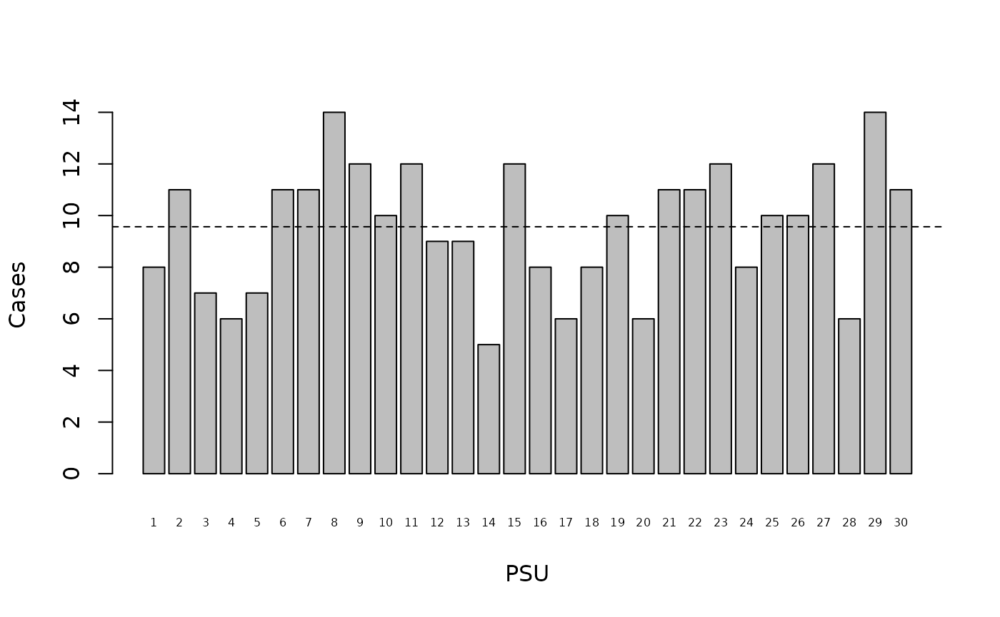
The dashed line on the plot marks the mean number of cases found in each primary sampling unit. A uniform distribution would show all bars ending close to this line (see figure above).
SMART uses the variance to mean ratio as a test of data quality. Green’s Index is a more robust choice because it can be used to compare samples that vary in overall sample size and the number of sampling units used.
The idea behind using a measure of dispersion to judge data quality is a belief that the distribution of cases of malnutrition across primary sampling units should always be random. If this is not the case then the data are considered to be suspect. The problem with this approach is that deviations from random can reflect the true distribution of cases in the survey area. This may occur when the survey area comprises, for example, more than one livelihood zone. It is also less likely to be the case for conditions, such as wasting and oedema, that are associated with infectious disease and so may be more clumped than randomly distributed across primary sampling units. This may become a particular problem when proximity sampling is used to collect the within-cluster samples.
Measures of dispersion are problematic when used as measures of data quality and should be interpreted with caution. The exception to this rule is finding maximum, or almost maximum, uniformity or maximum, or almost maximum, clumping. A finding of maximum uniformity is likely only when data have been fabricated. A finding of maximum clumping may indicate poor data collection and / or poor data management.